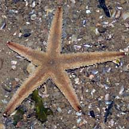
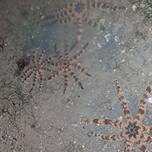
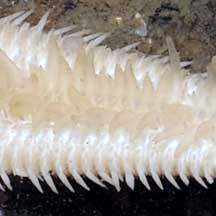
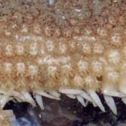

|
|
| sea stars text index | photo index |
| Phylum Echinodermata > Class Stelleroida > Subclass Asteroidea |
| Luidia
sea stars Luidia sp. Family Luidiidae updated Mar 2020 Where seen? These sea stars are sometimes encountered on our Northern shores. In sandy or silty shores. Sometimes, many are seen gathered together. Features: The arms are long, slightly rounded, and tapered to a pointed tip, edged with tiny spines along the sides. The upper surface of the body is covered with special flat-topped, pillar-like structures called paxillae. The underside is pale, and from grooves along the arms emerge large tube feet with pointed tips. They can move across the surface quite fast when submerged. Losing it: These sea stars tend to drop off their arms if they are stressed. So don't pick them up by their arms! What do they eat? These sea stars are carnivores! They hunt small creatures that are buried in the sand. These sea stars don't push their stomachs out of their mouths. Instead, they swallow their prey whole. |
 Long, narrow arms. Changi, Aug 08. |
 In spawning position? East Coast, Dec 08 |
 Sometimes, many are seen together. Changi, Jun 2019 |
| Some Luidia sea stars on Singapore shores |
|
 Pointed tube feet: transparent. |
 Flat-topped, pillar-like structures called paxillae. |
 Pointed tube feet: yellow or orange. |
 Flat-topped, pillar-like structures called paxillae. |

 Pointed tube feet: transparent. |
 Flat-topped, pillar-like structures called paxillae. |

| Luidia species recorded for Singapore from Wee Y.C. and Peter K. L. Ng. 1994. A First Look at Biodiversity in Singapore. *from Lane, David J.W. and Didier Vandenspiegel. 2003. A Guide to Sea Stars and Other Echinderms of Singapore, and Didier VandenSpiegel et al. 1998. The Asteroid fauna (Echinodermata) of Singapore with a distribuion table and illustrated identification to the species. in red are those listed among the threatened animals of Singapore from Ng, P. K. L. & Y. C. Wee, 1994. The Singapore Red Data Book: Threatened Plants and Animals of Singapore **from WORMS |
| Family Luidiidae |
| *Luidia hardwicki (Five-armed Luidia sea star) *Luidia longispina Luidia maculata (Eight-armed Luidia sea star) (VU: Vulnerable) Luidia penangensis (Six-armed Luidia sea star) (VU: Vulnerable) Luidia prionota |
Links
|